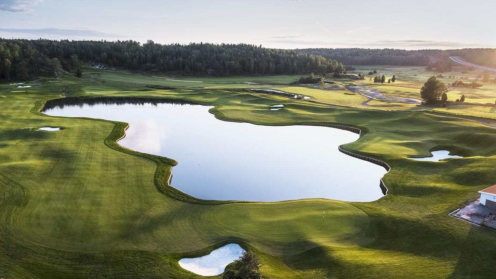

Säsong 2026 · Juniorgolf
Norrortsligan
Norrortsligan är lagtävlingen i golf för juniorer i Stockholms norra förorter – fem deltävlingar, en värdklubb i taget, och en finalomgång där vinnaren koras.
Totalställning
| Pos | Klubb | Spel | Snitt | Poäng |
|---|
Deltävlingar
Klicka på en omgång för att se resultatet.
Historik
Klicka på ett år för att se slutställningen.
Tävlingsupplägg
Varje lag deltar med max 10 spelare, där två platser är reserverade för tjejer. Varje deltagare ger en poäng i lagtävlingen.
Har ett lag inte två tjejer med kan platserna ersättas med killar, men inga deltagarpoäng ges för dessa. Vid fler än åtta killar i ett lag räknas de åtta bästa scorerna.
Utöver deltagarpoäng utgår placeringspoäng i var och en av de tre HCP-klasserna. Klasserna fördelas jämnt i antal deltagare utifrån HCP, och alla klasser spelar slaggolf med HCP.
Placeringspoäng per klass
- Första plats4
- Andra plats3
- Tredje plats2
- Fjärde plats1
Poängen från alla fem deltävlingar summeras. Vid lika totalpoäng avgör bästa placering i finalomgången.